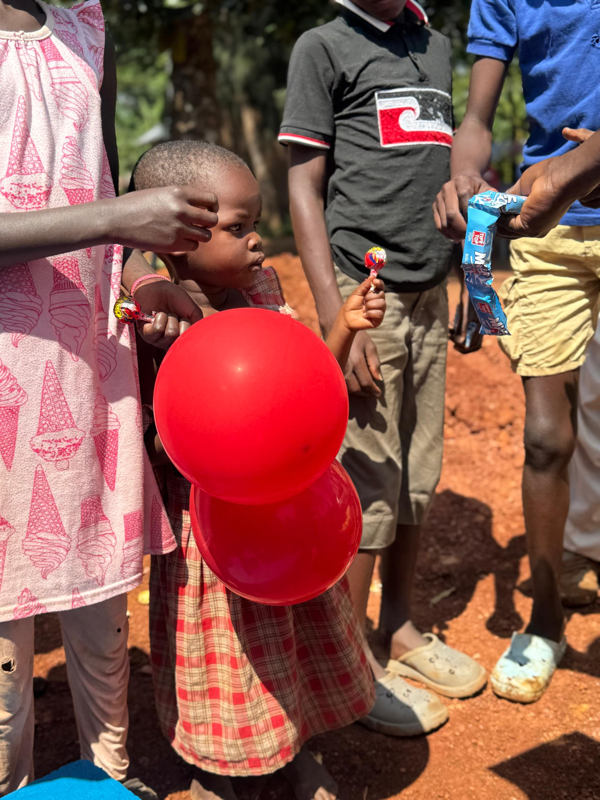
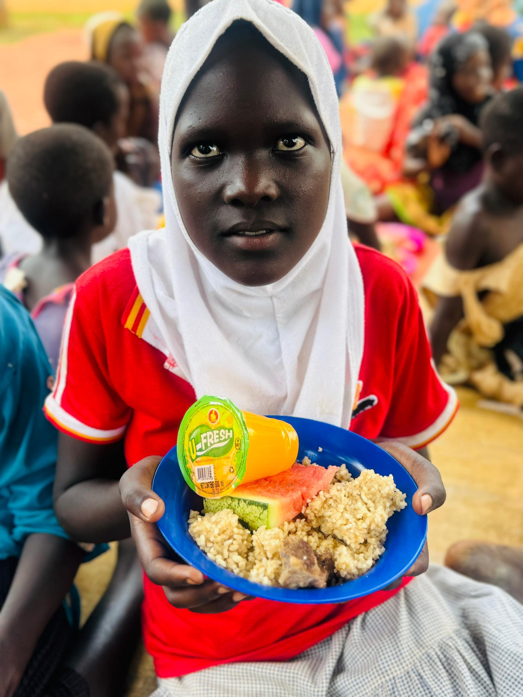

Our Work in the Community
These moments reflect some of the people, activities and communities connected to DRIMORIA's work.


DRIMORIA SUPPORT ORGANISATION works to empower vulnerable girls, women and youth, support orphans, and provide care and protection for street children.

DRIMORIA focuses on people and communities who need support, protection, opportunity and a pathway toward self-reliance.
Supporting vulnerable girls through education, protection, empowerment and opportunities for a better future.
Promoting social and economic empowerment so women can become more self-reliant.
Creating opportunities for young people through education, mentorship, skills development and leadership.
Supporting orphaned children with education, care, basic needs and opportunities to grow.
Providing care, protection, shelter and rehabilitation support for vulnerable children living on the streets.
Working with communities and partners to promote sustainable development and welfare.
DRIMORIA SUPPORT ORGANISATION is committed to uplifting vulnerable people and strengthening communities through practical and sustainable initiatives.
Our work focuses on vulnerable girls and women, young people, orphans and street children. We believe that every person deserves dignity, protection, opportunity and the chance to build a better future.
Through education, skills development, mentorship, community initiatives, advocacy and welfare support, we work alongside communities to create lasting positive change.
Learn More About UsTo empower vulnerable girls, women and youth, support orphans, and provide care, protection and accommodation to street children through sustainable community initiatives, education, skills development and opportunities for self-reliance.
To build a compassionate, empowered and inclusive community where girls, women, youth, orphans and street children live safe, dignified and productive lives, with young people equipped to become responsible leaders and positive agents of change.
Our programs respond to the different needs of vulnerable people while creating opportunities for dignity, growth and self-reliance.
Supporting women and girls through empowerment, skills development and opportunities for economic independence.
Supporting orphaned children with educational opportunities and basic needs.
Equipping young people with skills, mentorship, leadership opportunities and pathways toward self-reliance.
Providing care, protection, accommodation and support for vulnerable street children.
Working with communities to support sustainable development and improve social welfare.
Promoting awareness, dignity, protection and the rights of vulnerable people.
These moments reflect some of the people, activities and communities connected to DRIMORIA's work.
DRIMORIA believes that young people are an important part of building stronger and more sustainable communities.
We are committed to creating opportunities for youth through education, mentorship, skills development, leadership training and community participation.
We aim to help young people discover their potential, develop practical skills, become self-reliant and participate positively in the development of their communities.



Your support can help DRIMORIA create opportunities, provide care and strengthen the lives of vulnerable children, women, youth and communities.
Bank: ABSA | Account: 6009779130
Whether you would like to support our work, partner with us, volunteer or simply learn more, we would be happy to hear from you.